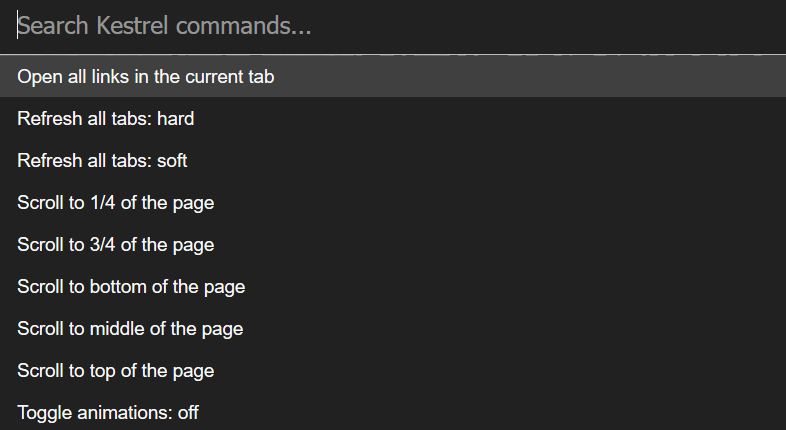

Kestrel is a collection of utilities for the browser, combined into a command palette. But of course, since you're already here, you know that already (and if you don't, here's a demo from the library that powers Kestrel). Let's talk about upgrading your browser experience.
Kestrel is activated by holding Alt+Shift+A (this can be changed - see here). This order was chosen as it is easily able to be activated using a single hand, doesn't conflict with any preexisting shortcuts. Once it's open, it'll look something like the image below (of course, the colour theme may be different).
To close it again, just use the same shortcut as before: Alt+Shift+A.
Commands can be filtered by typing into the command palette, and can be activated by pressing enter on the currently highlighted command (which is a different colour from the others) or clicking it.
That's all there is to Kestrel. It's a simple, efficient, and functional tool, to help efficient people.
If you want to further customize Kestrel by choosing a theme, enabled commands, or another option, head over to the settings page.
You can also see what commands do by visiting the commands wiki page.
If you want in on ongoing development or want to check out what's next, view Kestrel's readme.
There are also some caveats to know about, and you can read about them here.
The Wiki is also a great resource for information about using, contributing to, and learning Kestrel.